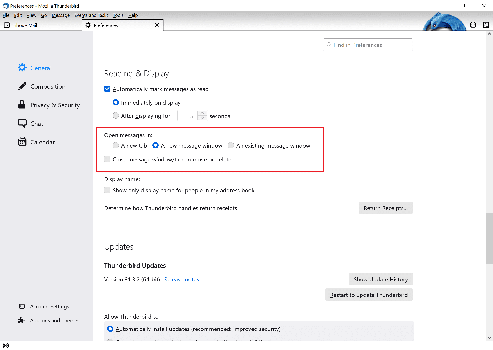

To configure your email accounts manually with Mozilla Thunderbird,
follow these steps:
Step 1: Open Mozilla Thunderbird on your computer.
Click the Thunderbird tab, then select
Account Settings.

Step 2: On Windows, click
Account Settings at the top right corner of the Thunderbird
window.
Step 3: In the new window, click on
Account Actions, then select Add Mail Account.
Step 4: Enter your name in the
Your name field as you want it to appear in outgoing
messages. Input your full email address in the
Email address field and the password for the email account.
Click Continue.
Step 5: If your email and password are correct, a
confirmation message will appear: “Configuration found at email
provider.” You can accept the suggested settings and click
Done to add your email account.
Note: If the suggested settings do not work or you
prefer manual configuration, click the
Configure manually button at the bottom of the window.
Step 6: Use the following settings for manual
configuration:
Incoming Server:
Protocol: Set to IMAP (recommended, unless you
specifically need POP3).
Hostname: Find the exact hostname in Site Tools >
Email > Accounts, select the email account, go to the kebab
menu > Mail Configuration, and check the Manual Settings tab.
Port: Set to 993 (this will automatically set
Connection security to SSL/TLS).
Authentication method: Select Autodetect.
Username: Use your full email address (e.g.,
username@yourdomain.com).
Outgoing Server:
Hostname: Same as above, check in Site Tools.
Port: Set to 465 (this will automatically set
Connection security to SSL/TLS).
Authentication method: Select Autodetect.
Username: Use your full email address (e.g.,
username@yourdomain.com).
Step 7: Click the Re-test button to verify
the settings.
Step 8: To confirm settings, go to Site Tools > Email
> Accounts, select the preferred domain, and check Mail Configuration
> Manual Settings tab.
Step 9: If configured correctly, the
Done button will become available. Click it to add your email
account to Thunderbird.
Edit Existing Email Account Settings in Thunderbird
To edit the settings of an existing email account in Mozilla
Thunderbird, follow these steps:
Step 1: Open Mozilla Thunderbird and go to
Thunderbird > Account Settings.
Step 2: On Windows, click
Account Settings at the top right corner of the Thunderbird
window.
Step 3: Expand the entry for the desired account and
click Server Settings.
Step 4: Go to Site Tools > Email > Accounts, select
the email account, and navigate to the kebab menu > Mail Configuration
> Manual Settings tab. Copy the Incoming Server hostname and
paste it into the Server Name field in Thunderbird. Press
Enter to confirm.
Note: A popup will appear stating that Thunderbird
needs to restart for the change to take effect. Click
Restart.
Step 5: After restart, a popup will request the
password for your email account. Enter the password and click
OK.
Step 6: Verify other settings on the same page using
the details from Site Tools > Email > Accounts > Mail Configuration >
Manual Settings tab.
Step 7: If everything is set up correctly,
Thunderbird should display messages from your email account, and you
can start managing it.